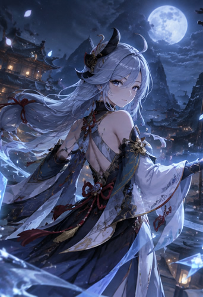
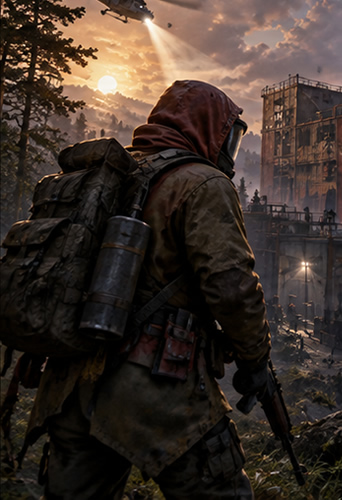
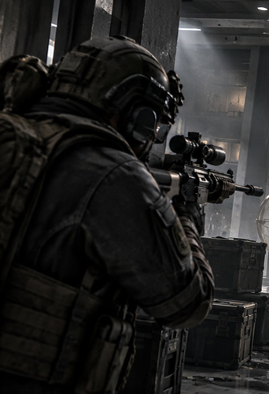
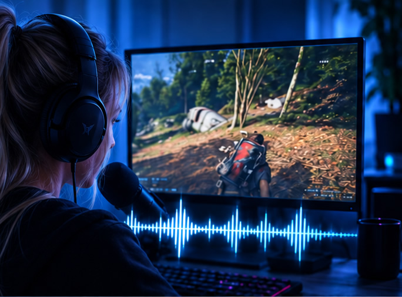
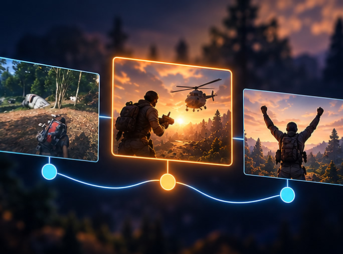
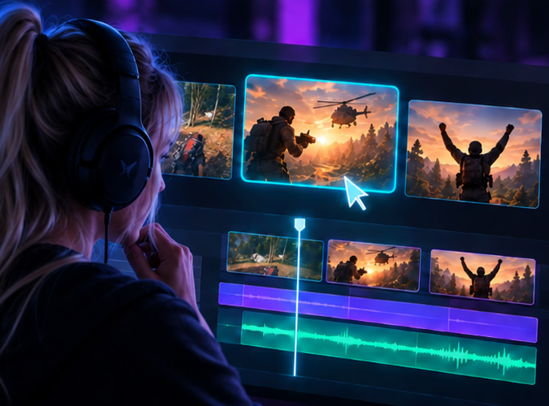
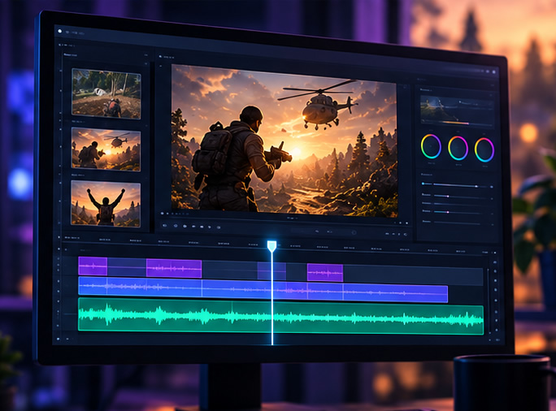

200+ EXPRESSIONS PER GAME · EXPANDED OVER TIME
- Maps & Zones
- Weapons & Items
- Objectives & Progression
- Game Mechanics
- Slang & Aliases
- Creators / Entities
Spend less time reviewing. More time creating. ShadyCut understands the session, finds the story, and builds an editable first cut.
GAME-AWARE UNDERSTANDING
Each supported game has its own knowledge profile with hundreds of expressions, locations, items, mechanics and aliases — helping ShadyCut understand what the streamer is actually talking about.



HOW IT WORKS
ShadyCut finds the moments that matter and shapes them into an editable first cut.
Gameplay, speech and context understood.

The strongest story is discovered and structured.

Scene order, pacing and cut decisions prepared.

A first-cut timeline ready for your editor.

REAL CREATOR CASE
A real Genshin Impact session, transformed into a structured first cut. Follow how ShadyCut connected the pull, reactions, context, and payoff into one editable story.
ShadyCut connected a character pull, personal stories, testing, reactions, and combat from 1ceStream’s Genshin Impact stream into a single Odette story and an editable first-cut draft.
Read Case Study